Load the Data
library(tidyverse) #> ── Attaching packages ─────────────────────────────────────── tidyverse 1.3.0 ── #> ✔ ggplot2 3.3.0 ✔ purrr 0.3.4 #> ✔ tibble 3.0.1 ✔ dplyr 0.8.5 #> ✔ tidyr 1.0.2 ✔ stringr 1.4.0 #> ✔ readr 1.3.1 ✔ forcats 0.5.0 #> ── Conflicts ────────────────────────────────────────── tidyverse_conflicts() ── #> ✖ dplyr::filter() masks stats::filter() #> ✖ dplyr::lag() masks stats::lag() library(covdata) library(ggrepel)
Data for the United States come from a variety of sources:
- State-level case and mortality data for the United States from the COVID Tracking Project.
- State-level and county-level case and mortality data for the United States from the New York Times.
- Data from the US Centers for Disease Control’s Coronavirus Disease 2019 (COVID-19)-Associated Hospitalization Surveillance.
COVID Tracking Project data
covus #> # A tibble: 57,762 x 5 #> date state fips measure count #> <date> <chr> <chr> <chr> <dbl> #> 1 2020-05-01 AK 02 positive 364 #> 2 2020-05-01 AK 02 negative 19961 #> 3 2020-05-01 AK 02 pending NA #> 4 2020-05-01 AK 02 hospitalized_currently 25 #> 5 2020-05-01 AK 02 hospitalized_cumulative NA #> 6 2020-05-01 AK 02 in_icu_currently NA #> 7 2020-05-01 AK 02 in_icu_cumulative NA #> 8 2020-05-01 AK 02 on_ventilator_currently NA #> 9 2020-05-01 AK 02 on_ventilator_cumulative NA #> 10 2020-05-01 AK 02 recovered 254 #> # … with 57,752 more rows
Draw a log-linear graph of cumulative reported US cases.
## Which n states are leading the count of positive cases or deaths? top_n_states <- function(data, n = 5, measure = c("positive", "death")) { meas <- match.arg(measure) data %>% group_by(state) %>% filter(measure == meas, date == max(date)) %>% drop_na() %>% ungroup() %>% top_n(n, wt = count) %>% pull(state) } state_cols <- c("gray70", "#195F90FF", "#D76500FF", "#238023FF", "#AB1F20FF", "#7747A3FF", "#70453CFF", "#D73EA8FF", "#666666FF", "#96971BFF", "#1298A6FF", "#6F9BD6FF", "#FF952DFF", "#66CF51FF", "#FF4945FF", "#A07DBAFF", "#AC7368FF", "#EF69A2FF", "#9F9F9FFF", "#CACA56FF", "#61C3D5FF") covus %>% group_by(state) %>% mutate(core = case_when(state %nin% top_n_states(covus) ~ "", TRUE ~ state), end_label = ifelse(date == max(date), core, NA)) %>% arrange(date) %>% filter(measure == "positive", date > "2020-03-09") %>% ggplot(aes(x = date, y = count, group = state, color = core, label = end_label)) + geom_line(size = 0.5) + geom_text_repel(segment.color = NA, nudge_x = 0.2, nudge_y = 0.1) + scale_color_manual(values = state_cols) + scale_x_date(date_breaks = "3 days", date_labels = "%b %e" ) + scale_y_continuous(trans = "log2", labels = scales::comma_format(accuracy = 1), breaks = 2^c(seq(1, 18, 1))) + guides(color = FALSE) + labs(title = "COVID-19 Cumulative Recorded Cases by US State", subtitle = paste("Data as of", format(max(covus$date), "%A, %B %e, %Y")), x = "Date", y = "Count of Cases (log 2 scale)", caption = "Data: COVID Tracking Project, http://covidtracking.com | Graph: @kjhealy") + theme_minimal() #> Warning: Transformation introduced infinite values in continuous y-axis #> Warning: Transformation introduced infinite values in continuous y-axis #> Warning: Removed 15 row(s) containing missing values (geom_path). #> Warning: Removed 2880 rows containing missing values (geom_text_repel).

Draw a graph of cumulative reported US deaths, aggregated to the national level
covus %>% filter(measure == "death") %>% group_by(date) %>% summarize(count = sum(count, na.rm = TRUE)) %>% ggplot(aes(x = date, y = count)) + geom_line(size = 0.75) + scale_x_date(date_breaks = "1 week", date_labels = "%b %e" ) + scale_y_continuous(labels = scales::comma, breaks = seq(0, 60000, 10000)) + labs(title = "COVID-19 Cumulative Recorded Deaths in the United States", subtitle = paste("Data as of", format(max(covus$date), "%A, %B %e, %Y"), "Recorded counts underestimate total mortality."), x = "Date", y = "Count of Deaths", caption = "Data: COVID Tracking Project, http://covidtracking.com | Graph: @kjhealy") + theme_minimal()

State-Level and County-Level (Cumulative) Data from the New York Times
State-level table
nytcovstate #> # A tibble: 3,259 x 5 #> date state fips cases deaths #> <date> <chr> <chr> <dbl> <dbl> #> 1 2020-01-21 Washington 53 1 0 #> 2 2020-01-22 Washington 53 1 0 #> 3 2020-01-23 Washington 53 1 0 #> 4 2020-01-24 Illinois 17 1 0 #> 5 2020-01-24 Washington 53 1 0 #> 6 2020-01-25 California 06 1 0 #> 7 2020-01-25 Illinois 17 1 0 #> 8 2020-01-25 Washington 53 1 0 #> 9 2020-01-26 Arizona 04 1 0 #> 10 2020-01-26 California 06 2 0 #> # … with 3,249 more rows
County-level table
nytcovcounty #> # A tibble: 103,960 x 6 #> date county state fips cases deaths #> <date> <chr> <chr> <chr> <dbl> <dbl> #> 1 2020-01-21 Snohomish Washington 53061 1 0 #> 2 2020-01-22 Snohomish Washington 53061 1 0 #> 3 2020-01-23 Snohomish Washington 53061 1 0 #> 4 2020-01-24 Cook Illinois 17031 1 0 #> 5 2020-01-24 Snohomish Washington 53061 1 0 #> 6 2020-01-25 Orange California 06059 1 0 #> 7 2020-01-25 Cook Illinois 17031 1 0 #> 8 2020-01-25 Snohomish Washington 53061 1 0 #> 9 2020-01-26 Maricopa Arizona 04013 1 0 #> 10 2020-01-26 Los Angeles California 06037 1 0 #> # … with 103,950 more rows
Draw a log-linear graph of cumulative US cases by county.
nytcovcounty %>% mutate(uniq_name = paste(county, state)) %>% # Can't use FIPS because of how the NYT bundled cities group_by(uniq_name) %>% mutate(days_elapsed = date - min(date)) %>% ggplot(aes(x = days_elapsed, y = cases, group = uniq_name)) + geom_line(size = 0.25, color = "gray20") + scale_y_log10(labels = scales::label_number_si()) + guides(color = FALSE) + facet_wrap(~ state, ncol = 5) + labs(title = "COVID-19 Cumulative Recorded Cases by US County", subtitle = paste("New York is bundled into a single area in this data.\nData as of", format(max(nytcovcounty$date), "%A, %B %e, %Y")), x = "Days since first case", y = "Count of Cases (log 10 scale)", caption = "Data: The New York Times | Graph: @kjhealy") + theme_minimal() #> Don't know how to automatically pick scale for object of type difftime. Defaulting to continuous. #> Warning: Transformation introduced infinite values in continuous y-axis

US CDC Surveillance Network Data
This US Centers for Disase Control surveillance network conducts population-based surveillance for laboratory-confirmed COVID-19-associated hospitalizations in children (persons younger than 18 years) and adults in the United States. The current network covers nearly 100 counties in the 10 Emerging Infections Program (EIP) states (CA, CO, CT, GA, MD, MN, NM, NY, OR, and TN) and four additional states through the Influenza Hospitalization Surveillance Project (IA, MI, OH, and UT). The network represents approximately 10% of US population (~32 million people). Cases are identified by reviewing hospital, laboratory, and admission databases and infection control logs for patients hospitalized with a documented positive SARS-CoV-2 test. Data gathered are used to estimate age-specific hospitalization rates on a weekly basis and describe characteristics of persons hospitalized with COVID-19. Laboratory confirmation is dependent on clinician-ordered SARS-CoV-2 testing. Therefore, the unadjusted rates provided are likely to be underestimated as COVID-19-associated hospitalizations can be missed due to test availability and provider or facility testing practices. COVID-NET hospitalization data are preliminary and subject to change as more data become available. All incidence rates are unadjusted. Please use the following citation when referencing these data: “COVID-NET: COVID-19-Associated Hospitalization Surveillance Network, Centers for Disease Control and Prevention. WEBSITE. Accessed on DATE”.
Thanks to Bob Rudis’s cdccovidview package for making these data tractable to include.
cdc_hospitalizations #> # A tibble: 4,590 x 8 #> catchment network year mmwr_year mmwr_week age_category cumulative_rate #> <chr> <chr> <chr> <chr> <chr> <chr> <dbl> #> 1 Entire N… COVID-… 2020 2020 10 0-4 yr 0 #> 2 Entire N… COVID-… 2020 2020 11 0-4 yr 0 #> 3 Entire N… COVID-… 2020 2020 12 0-4 yr 0 #> 4 Entire N… COVID-… 2020 2020 13 0-4 yr 0.3 #> 5 Entire N… COVID-… 2020 2020 14 0-4 yr 0.7 #> 6 Entire N… COVID-… 2020 2020 15 0-4 yr 1.2 #> 7 Entire N… COVID-… 2020 2020 16 0-4 yr 1.7 #> 8 Entire N… COVID-… 2020 2020 17 0-4 yr 1.9 #> 9 Entire N… COVID-… 2020 2020 18 0-4 yr NA #> 10 Entire N… COVID-… 2020 2020 19 0-4 yr NA #> # … with 4,580 more rows, and 1 more variable: weekly_rate <dbl> cdc_catchments #> # A tibble: 17 x 2 #> name area #> * <chr> <chr> #> 1 COVID-NET Entire Network #> 2 EIP California #> 3 EIP Colorado #> 4 EIP Connecticut #> 5 EIP Entire Network #> 6 EIP Georgia #> 7 EIP Maryland #> 8 EIP Minnesota #> 9 EIP New Mexico #> 10 EIP New York #> 11 EIP Oregon #> 12 EIP Tennessee #> 13 IHSP Entire Network #> 14 IHSP Iowa #> 15 IHSP Michigan #> 16 IHSP Ohio #> 17 IHSP Utah cdc_deaths_by_state #> # A tibble: 54 x 13 #> state covid_deaths total_deaths percent_expecte… pneumonia_deaths #> <chr> <chr> <chr> <chr> <chr> #> 1 2020… United Stat… Total US 2020-02-01T00:0… 2020-04-25T00:0… #> 2 2020… Alabama Alabama 2020-02-01T00:0… 2020-04-25T00:0… #> 3 2020… Alaska Alaska 2020-02-01T00:0… 2020-04-25T00:0… #> 4 2020… Arizona Arizona 2020-02-01T00:0… 2020-04-25T00:0… #> 5 2020… Arkansas Arkansas 2020-02-01T00:0… 2020-04-25T00:0… #> 6 2020… California California 2020-02-01T00:0… 2020-04-25T00:0… #> 7 2020… Colorado Colorado 2020-02-01T00:0… 2020-04-25T00:0… #> 8 2020… Connecticut Connecticut 2020-02-01T00:0… 2020-04-25T00:0… #> 9 2020… Delaware Delaware 2020-02-01T00:0… 2020-04-25T00:0… #> 10 2020… District of… District of… 2020-02-01T00:0… 2020-04-25T00:0… #> # … with 44 more rows, and 8 more variables: pneumonia_and_covid_deaths <int>, #> # all_influenza_deaths_j09_j11 <int>, NA <dbl>, NA <int>, NA <int>, NA <int>, #> # NA <chr>, NA <chr> nssp_covid_er_reg #> # A tibble: 538 x 9 #> week num_fac total_ed_visits visits pct_visits visit_type region source #> <int> <int> <chr> <int> <dbl> <chr> <chr> <chr> #> 1 41 202 130377 814 0.006 ili Regio… Emerg… #> 2 42 202 132385 912 0.00700 ili Regio… Emerg… #> 3 43 202 131866 883 0.00700 ili Regio… Emerg… #> 4 44 203 128256 888 0.00700 ili Regio… Emerg… #> 5 45 203 127466 979 0.008 ili Regio… Emerg… #> 6 46 202 125306 1188 0.009 ili Regio… Emerg… #> 7 47 202 128877 1235 0.01 ili Regio… Emerg… #> 8 48 202 124781 1451 0.012 ili Regio… Emerg… #> 9 49 202 125939 1362 0.011 ili Regio… Emerg… #> 10 50 202 130430 1405 0.011 ili Regio… Emerg… #> # … with 528 more rows, and 1 more variable: year <int>
Summary view of CDC Surveillance Network Data
age_f <- c( "0-4 yr", "5-17 yr", "18-49 yr", "50-64 yr", "65+ yr", "65-74 yr", "75-84 yr", "85+") cdc_hospitalizations %>% mutate(start = mmwr_week_to_date(mmwr_year, mmwr_week)) %>% filter(!is.na(weekly_rate)) %>% filter(catchment == "Entire Network") %>% select(start, network, age_category, weekly_rate) %>% filter(age_category != "Overall") %>% mutate(age_category = factor(age_category, levels = age_f)) %>% ggplot() + geom_line(aes(start, weekly_rate)) + scale_x_date( date_breaks = "2 weeks", date_labels = "%b\n%d" ) + facet_grid(network ~ age_category) + labs(x = NULL, y = "Rates per 100,000 pop", title = "COVID-NET Weekly Rates by Network and Age Group", subtitle = "Courtesy Bob Rudis's cdccovidview", caption = sprintf("Source: COVID-NET: COVID-19-Associated Hospitalization Surveillance Network, Centers for Disease Control and Prevention.\n<https://gis.cdc.gov/grasp/COVIDNet/COVID19_3.html>; Accessed on %s", Sys.Date())) + theme_minimal()